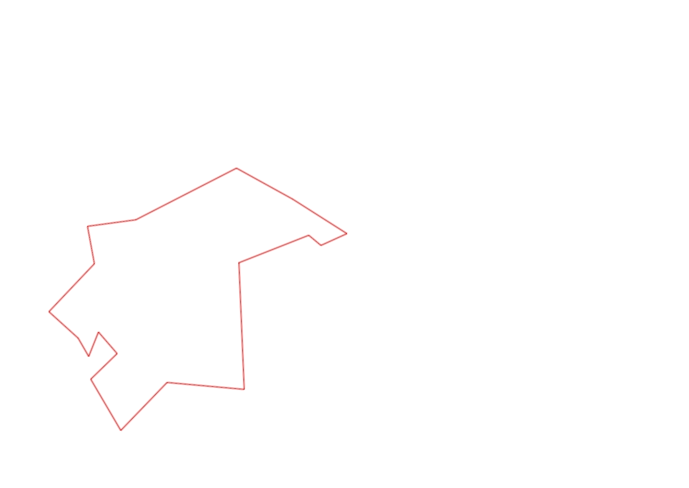
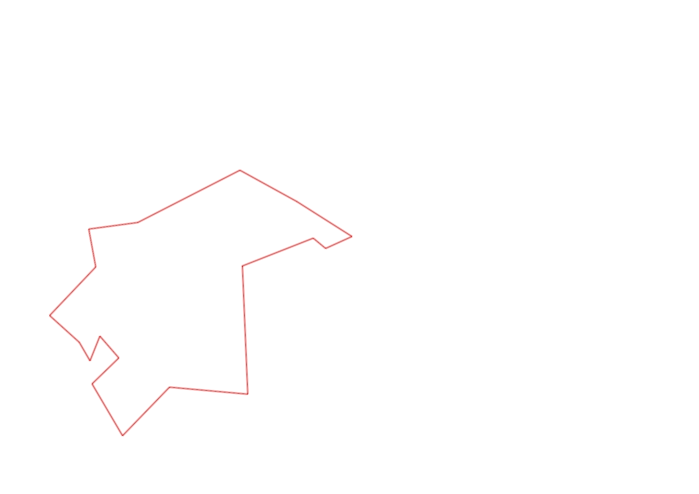

| Control |
Points |
Time Punched |
Distance |
Your Time |
Pace |
Place |
Fastest Time |
Median Time |
% Behind Fastest |
| 92 |
90 |
|
0.23 |
0:02:32 |
11:00 |
5 / 11 |
0:02:15 |
0:02:35 |
12% |
| 35 |
30 |
|
0.05 |
0:02:01 |
40:20 |
8 / 12 |
0:01:31 |
0:01:55 |
32% |
| 47 |
40 |
|
0.09 |
0:01:34 |
17:24 |
7 / 11 |
0:00:54 |
0:01:31 |
74% |
| 57 |
50 |
|
0.2 |
0:05:01 |
25:05 |
5 / 7 |
0:03:52 |
0:04:28 |
29% |
| 107 |
100 |
|
0.2 |
0:03:44 |
18:40 |
19 / 21 |
0:00:00 |
0:02:52 |
-% |
| 63 |
60 |
|
0.35 |
0:07:01 |
20:02 |
18 / 18 |
0:01:59 |
0:02:42 |
253% |
| 32 |
30 |
|
0.15 |
0:01:56 |
12:53 |
26 / 27 |
0:00:36 |
0:00:56 |
222% |
| 44 |
40 |
|
0.12 |
0:02:10 |
18:03 |
18 / 29 |
0:00:52 |
0:01:49 |
150% |
| 53 |
50 |
|
0.2 |
0:03:22 |
16:50 |
20 / 26 |
0:01:31 |
0:02:15 |
121% |
| 69 |
60 |
|
0.12 |
0:01:35 |
13:11 |
22 / 29 |
0:00:45 |
0:01:18 |
111% |
| 71 |
70 |
|
0.06 |
0:02:20 |
38:53 |
22 / 25 |
0:00:48 |
0:01:13 |
191% |
| 54 |
50 |
|
0.08 |
0:01:04 |
13:20 |
30 / 33 |
0:00:27 |
0:00:45 |
137% |
| 41 |
40 |
|
0.09 |
0:01:37 |
17:57 |
5 / 13 |
0:01:01 |
0:01:43 |
59% |
| 40 |
40 |
|
0.11 |
0:02:28 |
22:25 |
24 / 24 |
0:00:45 |
0:01:00 |
228% |
| 77 |
70 |
|
0.18 |
0:02:49 |
15:38 |
17 / 21 |
0:01:35 |
0:02:21 |
77% |
| 59 |
50 |
|
0.21 |
0:03:25 |
16:16 |
14 / 18 |
0:02:00 |
0:02:47 |
70% |
| 61 |
60 |
|
0.24 |
0:04:35 |
19:05 |
17 / 19 |
0:02:14 |
0:03:16 |
105% |
| Finish |
0 |
|
0.39 |
0:05:46 |
14:47 |
2 / 2 |
0:03:49 |
0:04:47 |
51% |
Total Distance Covered: 3.07km
Points Scored: 930
Late Penalty: 0
Final Score: 930
Total Time: 0hours 55minutes 0seconds
Efficiency: 302.93 points/km
 
